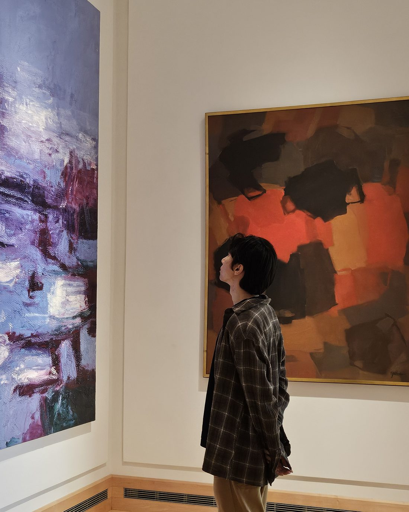
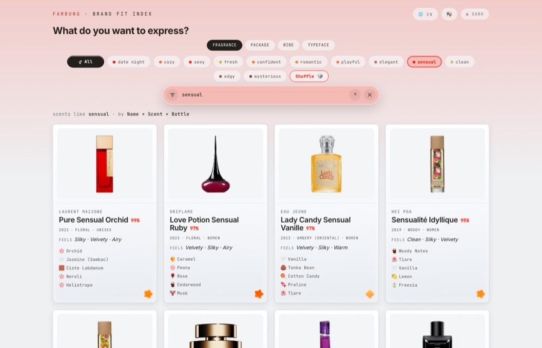
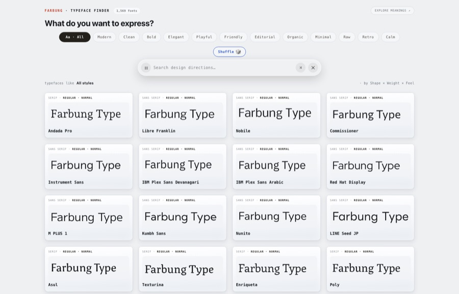
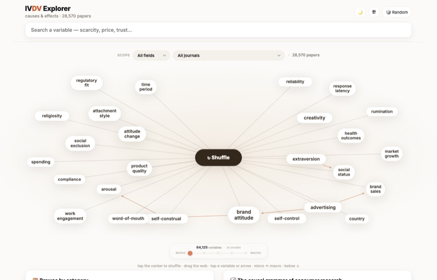
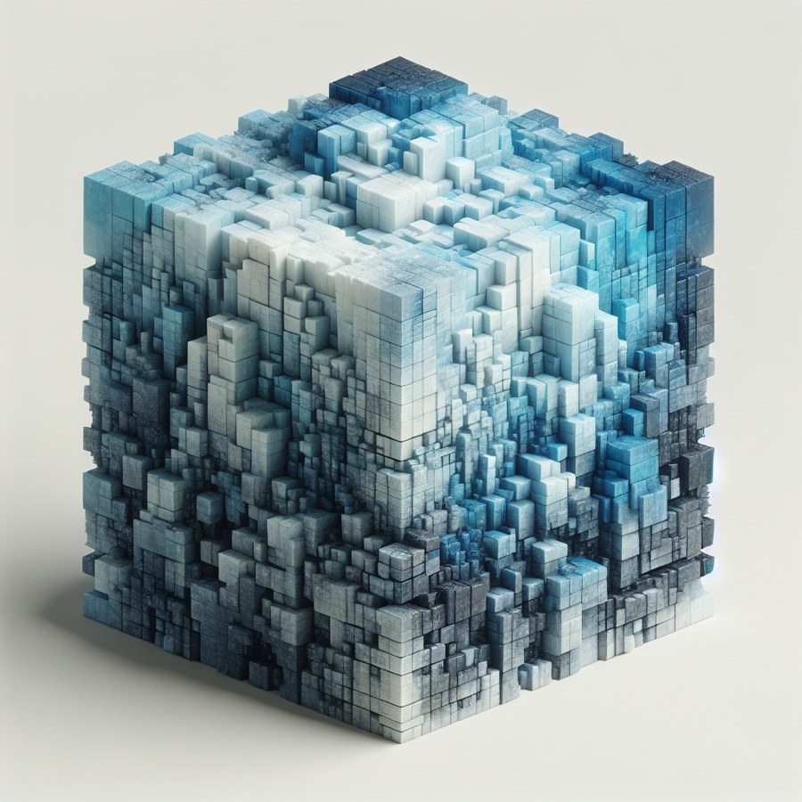
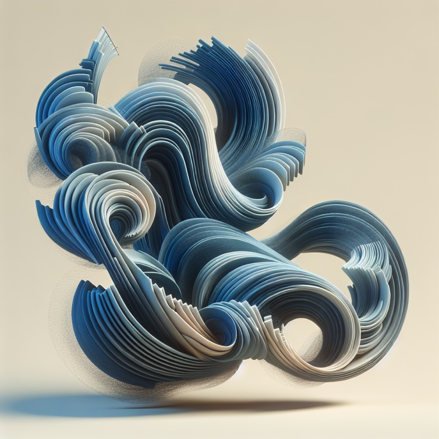
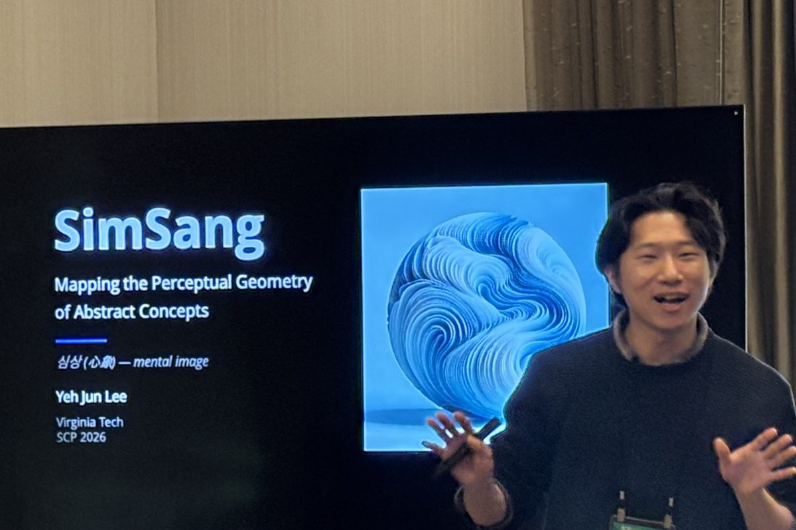
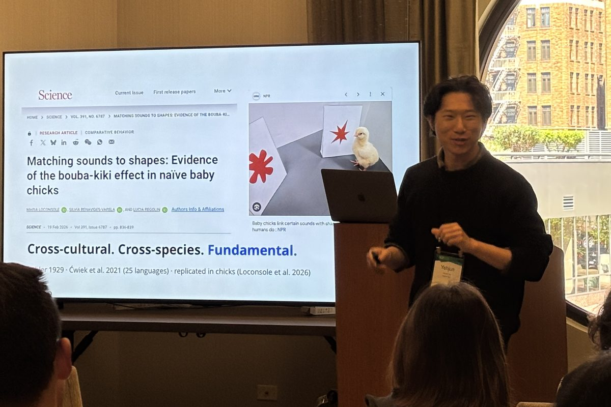
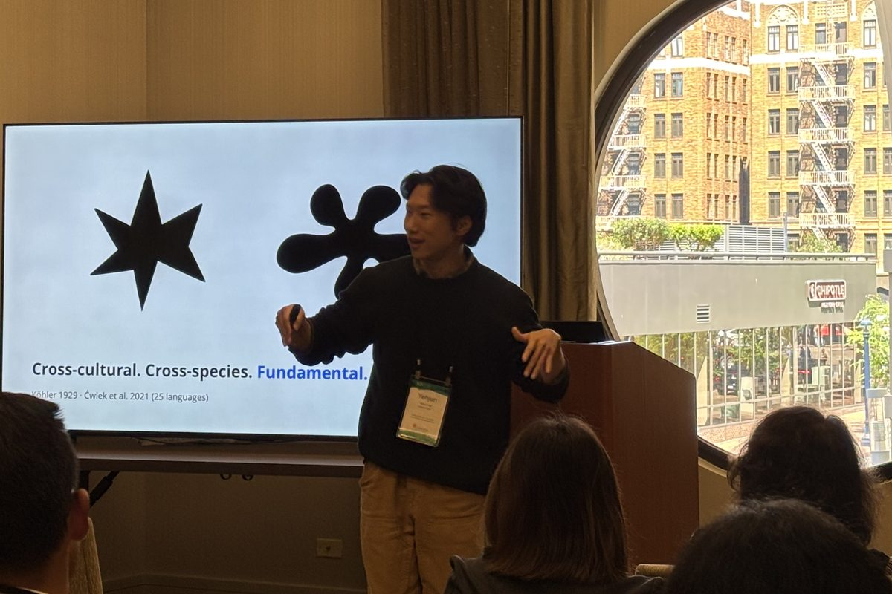

Ph.D. in Marketing · Virginia Tech
A scent suits a brand or it doesn't. A typeface feels playful before anyone can say why. I build instruments that turn these unspoken judgments into measurements — and test them against how people actually perceive.

Lee, Y. J., & Park, J. (2022). The safety paradox of self-driving cars. Asia Marketing Journal, 23(4).
Sensory marketing and cross-modal correspondence · brand meaning · language models as measurement instruments · consumer responses to AI

Describe a feeling in plain words; get the fragrances, packaging, and wines that express it.
simsang-1efb9.web.app ↗
Type serenity and watch the fonts reorder by shape, weight, and feel.
simsang-type.web.app ↗
Marketing and psychology findings mapped by cause, effect, moderator, and mediator: see what has been tested against what.
ivdv-cddf3.web.app ↗Every word has a feel beyond its definition. SimSang reads it and renders it as a form.
The melodic modes of Arabic and Turkish music. From the two words alone:


Working notes, shared early. Open to collaboration — get in touch.
Working notes · September 2026


Presenting SimSang at the Society for Consumer Psychology, San Diego, March 2026.
Instructor of record, Virginia Tech
Ph.D., Marketing — Virginia Tech 2026
M.S., Marketing — Korea University 2020
B.B.A. — Korea University 2016
Before academia, marketing at Franklin Templeton Investments.